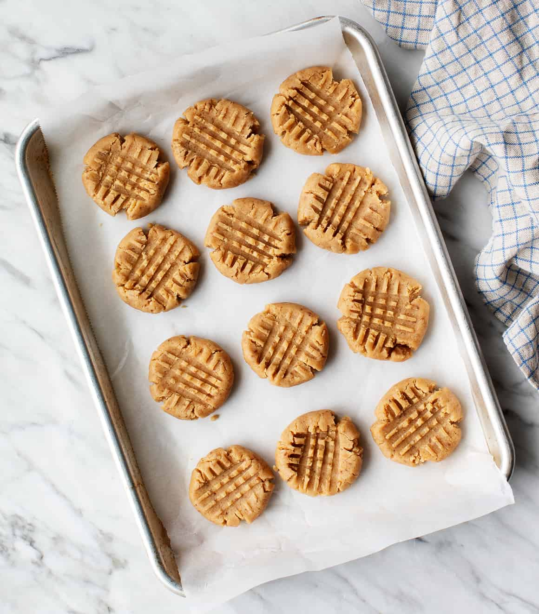

Adapted from: Love and Lemons
A peanut butter cookie recipe that will give you chewy and nutty cookies.

1. Preheat the oven to 350 degrees F and line a baking sheet with parchment paper
2. Combine the flour, baking soda, baking powder, and salt.
3. In another bowl, combine cocnut oil, sugar, brown sugar, peanut butter, vanilla, and milk.
4. Add the dry ingredients to te wet ingredients and stir until just combined.
5. Chill dough for at least 30 minutes, but up to 24 hours. If storing, let dough sit for an hour
6. Roll dough into 2 in. balls. If dough is too crumbly, add a teaspoon of milk at a time.
Slightly flatten and place on baking sheet. Bake for 12 to 13 minutes.